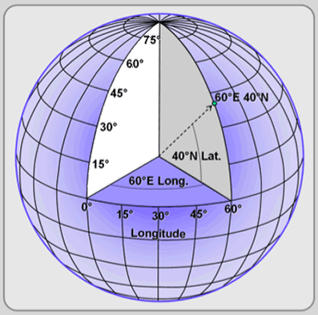

Coordonnées géographiques

On a déjà vu que les coordonnées géographiques permettent de se repérer sur le globe terrestre à l'aide de la latitude et de la longitude.
La latitude peut s'écrire de deux manières différentes :
- L'écriture sexagésimale qui est composée de la mesure de l'angle en degrés minutes secondes suivie de l'orientation (Nord ou Sud).
- L'écriture décimale, positive ou négative suivant que l'on se trouve dans l'hémisphère nord ou dans l'hémisphère sud. La direction de la latitude est renseignée dans le signe (+ pour Nord et - pour Sud)
La longitude peut s'écrire de deux manières différentes :
- L'écriture sexagésimale qui est composée de la mesure de l'angle en degrés minutes secondes suivie de l'orientation (Ouest ou Est).
- L'écriture décimale, positive ou négative suivant que l'on se trouve à l'Est ou l'Ouest du méridien de Greenwitch.
On rappelle qu'il faut 60" (60 secondes) pour obtenir 1' (1 minute) et qu'il faut 60' (60 minutes) pour avoir 1°
Il faut donc 3600" pour avoir 1°.
Exemples :
- Une latitude d'écriture sexagésimale : 15°12'36" N s'exprime aussi à l'aide de l'écriture décimale : 15,19 (=15+12/60+36/3600)
- Une latitude d'écriture sexagésimale : 33°21'18" S s'exprime aussi à l'aide de l'écriture décimale : -33,355 (=-33+21/60+18/3600)
- Une latitude d'écriture sexagésimale : 97°48'45" O s'exprime aussi à l'aide de l'écriture décimale : -97,8125 (=-97+48/60+45/3600)
- Une longitude d'écriture sexagésimale : 7°33'09" E s'exprime aussi à l'aide de l'écriture décimale : 7,5525 (=7+33/60+9/3600)
Cliquer sur le liens suivants pour accéder aux TP avec Python :
TP Python